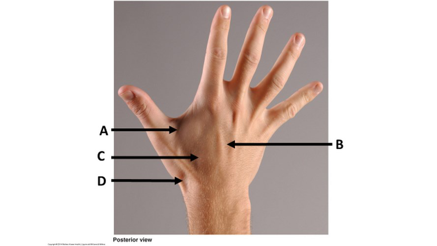
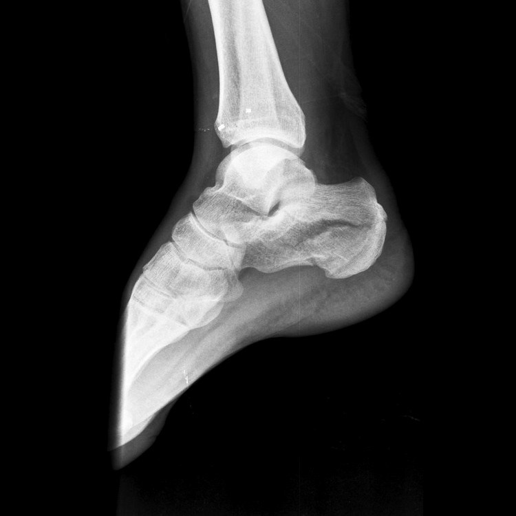
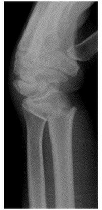
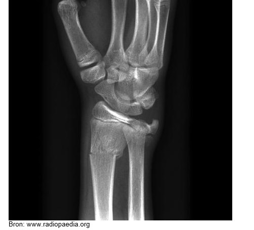
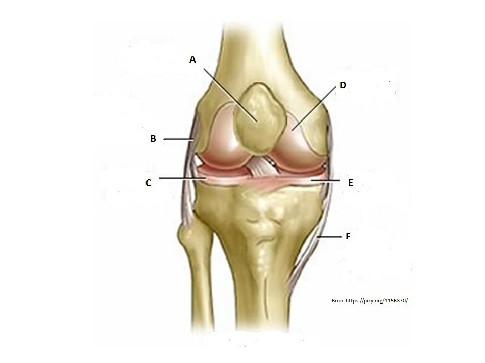
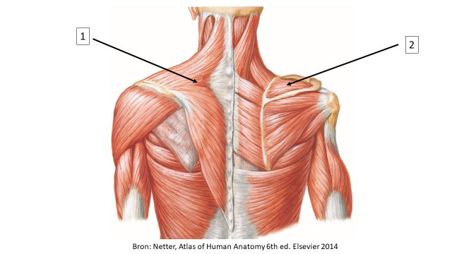
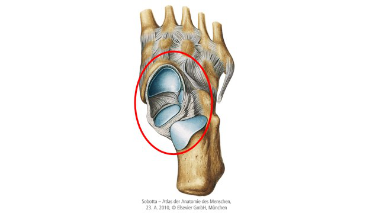
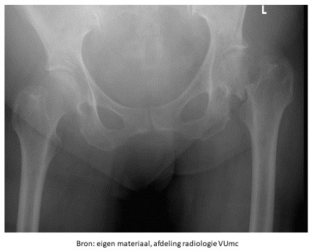

Vraag 1
Welke twee structuren bevinden zich in de subacromiale ruimte?
Meerdere antwoorden mogelijk.
Vraag 2
Een recreatieve hardloper is extra uren per week gaan rennen omdat hij wil oefenen voor een marathon. Hij krijgt forse pijn in zijn onderbeen die toeneemt bij het hardlopen. Hij voelt een pijnlijke harde zwelling aan de ventrale zijde halverwege zijn onderbeen.
Aan welke diagnose denkt de sportarts?
Vraag 3
De belangrijkste oorzaak voor psychische klachten bij werknemers in Nederland is/zijn:
Vraag 4
Welke drie structuren worden onderzocht bij het toepassen van de 'Ottawa Ankle Rules'?
Meerdere antwoorden mogelijk.
Vraag 5
Kies de juiste alternatieven.
De levensduur van een heupprothese wordt vooral bepaald door het (in plaats van het type prothese).
Vraag 6
Wat is de anatomische oorzaak voor een avasculaire kopnecrose na een mediale collumfractuur? Onderbreking van arterietakken die ontspringen uit de:
Vraag 7
Bij een bottransplantatie met allograft wordt gebruik gemaakt van:
Vraag 8
Bij het ontstaan van een varus gonartrose is er geen sprake van:
Vraag 9
Welke hoofdfunctie hebben onderstaande spieren op het heupgewricht?
Sleep een optie naar de bijbehorende rij, of tik eerst op een kaart en dan op een rij.
m. adductor longus
Sleep hier naartoe
m. biceps femoris
Sleep hier naartoe
m. iliopsoas
Sleep hier naartoe
Vraag 10
De proef van Finkelstein is positief bij:
Vraag 11
Wat zien we niet op een röntgenfoto bij degeneratie van de tussenwervelschijf?
Vraag 12
Met welke letter wordt de locatie van de anatomische snuifdoos aangeduid?

Vraag 13
Bij het lichamelijk onderzoek van de knie zijn er verschillende testen die toegepast kunnen worden. Welk van de onderstaande testen kan het vermoeden van een voorste kruisbandlaesie bevestigen?
Vraag 14
Een Bankert letsel bij een recidiverende schouderluxatie is een:
Vraag 15
Welke afwijking ontstaat bij schade aan de n. thoracicus longus?
Vraag 16
Welke afwijking is op de röntgenfoto te zien?

Vraag 17
Welke chirurgische therapie wordt NOOIT verricht bij een 55-jarige patiënte met symptomatische varus gonartrose?
Vraag 18
Een beenverlenging kan worden uitgevoerd met behulp van een fixateur externe. Hierbij wordt eerst een osteotomie verricht, en na enkele dagen wordt de fixateur iedere dag enkele keren langzaam uit elkaar gedraaid. Hierdoor wordt het bot verlengd tijdens de genezing.
Hoe wordt dit proces van beenverlenging genoemd?
Vraag 19
Welke leefregel kan men aan een patiënt met symptomatische coxartrose het beste meegeven?
Vraag 20
Welke globale hoofdfunctie hebben de spieren in het polsgewricht die ontspringen aan de epicondylus lateralis?
Vraag 21
Welke drie botstukken vormen samen het onderste spronggewricht?
Meerdere antwoorden mogelijk.
Vraag 22
U ziet een 20-jarige zeer talentvolle Ajax-voetballer met enkelklachten rechts. Bij onderzoek wordt pijn aangegeven bij geforceerde dorsaal flexie. Wat is de meest waarschijnlijke oorzaak?
Vraag 23
Voor welk ligament is de voorste schuifladetest van de enkel een goede test qua sensitiviteit en specificiteit voor een letsel?
Vraag 24
Welke afwijking is te zien op de röntgenfoto?

Vraag 25
Casus - De heer Overmaat (3 vragen)
De heer Overmaat komt met gewrichtspijn bij de huisarts en geeft aan zich zorgen te maken dat het mogelijk Reuma zou kunnen zijn. Hij geeft aan tot deze gedachte te zijn gekomen omdat zijn beste vriend deze aandoening heeft en hij heel erg op hem lijkt in uiterlijk én gedrag.
De heer Overmaat komt met gewrichtspijn bij de huisarts en geeft aan zich zorgen te maken dat het mogelijk Reuma zou kunnen zijn. Hij geeft aan tot deze gedachte te zijn gekomen omdat zijn beste vriend deze aandoening heeft en hij heel erg op hem lijkt in uiterlijk én gedrag.
Waardoor wordt de risicoperceptie van de heer Overmaat beïnvloed?
Vraag 26
Kies de juiste alternatieven.
Welke hoofdfunctie hebben de volgende spieren in het kniegewricht? Kies het juiste alternatief. m. semimembranosus: — m. quadriceps femoris:
Vraag 27
Welk kenmerk hoort bij een 'frozen shoulder'?
Vraag 28
Het enkelgewricht wordt zowel lateraal als mediaal stabiel gehouden door stevige ligamenten.
Welk van onderstaande ligamenten vertoont bij een positieve voorste schuiflade test meestal laxiteit?
Vraag 29
Welke twee structuren bevinden zich in de subacromiale ruimte?
Meerdere antwoorden mogelijk.
Vraag 30
Bekijk de afbeelding. Welke twee botstukken vertonen een fractuur op deze afbeelding?

Meerdere antwoorden mogelijk.
Vraag 31
Welk kenmerk past het beste bij een patellofemoraal pijn syndroom of 'chondropathia patellae'?
Vraag 32
Op onderstaande afbeelding ziet u een knie. Met welke letter wordt de mediale meniscus aangeduid?

Vraag 33

Kies de juiste alternatieven.
Wat is een hoofdfunctie van de met de nummers aangeduide spieren? Spier 1: . Spier 2: .
Vraag 34
Welke twee bewegingen vinden hoofdzakelijk plaats in het met de rode cirkel aangeduide gewricht?

Meerdere antwoorden mogelijk.
Vraag 35
Bij een 70-jarige vrouw met een symptomatische hallux valgus rechts wordt een operatie voorgesteld, waarbij het proximale deel van de basisphalanx van de grote teen wordt verwijderd (Keller-Brandes).
Hoe wordt de procedure waarbij een deel van het gewricht wordt verwijderd genoemd?
Vraag 36
Een actieve jonge profvoetballer wordt op de eerste hulp gezien met pijnklachten bij bewegen en bewegingsbeperking van zijn dominante rechter enkel. De orthopeed ziet op de beeldvormende diagnostiek kleine verkalkingen in het kapsel, osteofyten aan de mediale onderrand van de tibia en aan de talus neus.
Wat is nu het beste advies van de orthopeed aan de profvoetballer?
Vraag 37
Een patiënt presenteert zich met een schouderluxatie. Na repositie is er een onvermogen tot abductie in het schoudergewricht aan de aangedane zijde.
Op schade aan welke zenuw moet de arts nu primair bedacht zijn?
Vraag 38
Welke afwijking is op de röntgenfoto te zien?

Vraag 39
Een 30-jarige man wordt op de SEH gezien na een val op de uitgestrekte rechter arm/pols. Op de initiële Röntgenfoto van de pols worden geen afwijkingen gezien en de behandeling is functioneel. In verband met aanhoudende polsklachten wordt na 4 maanden een nieuwe polsfoto gemaakt. Nu is er een pseudartrose zichtbaar van het os scaphoideum zonder verdere tekenen van radiocarpale artrose.
Waaruit bestaat de behandeling van deze pseudartrose van het os scaphoideum?
Vraag 40
Het begrip ziekte kent verschillende betekenissen. Meneer de Vries heeft heuparthrose en heeft hier veel pijn van waardoor hij weinig kan wandelen.
De heupartrose is hierbij een voorbeeld van?